<h1>List of cards</h1>
Click on a card and then browse the previous card or the following card from the current card.<BR>There are at most 25 cards per page<BR>The card order is random (at HTML compile time).<ul><LI><center><A HREF="card-50.html" target="_blank">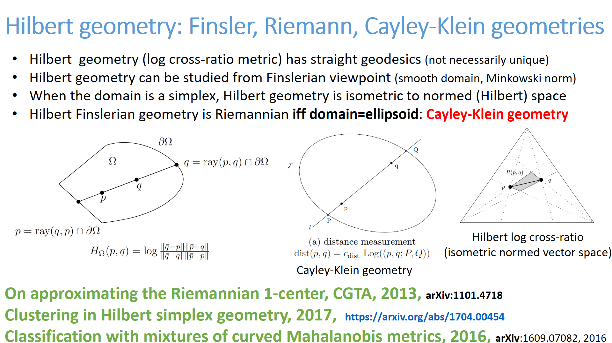</A>(50)</LI>
<LI><center><A HREF="card-51.html" target="_blank">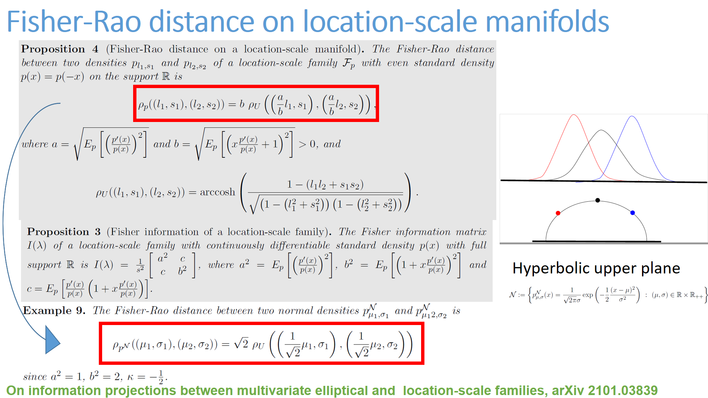</A>(51)</LI>
<LI><center><A HREF="card-52.html" target="_blank"></A>(52)</LI>
<LI><center><A HREF="card-53.html" target="_blank">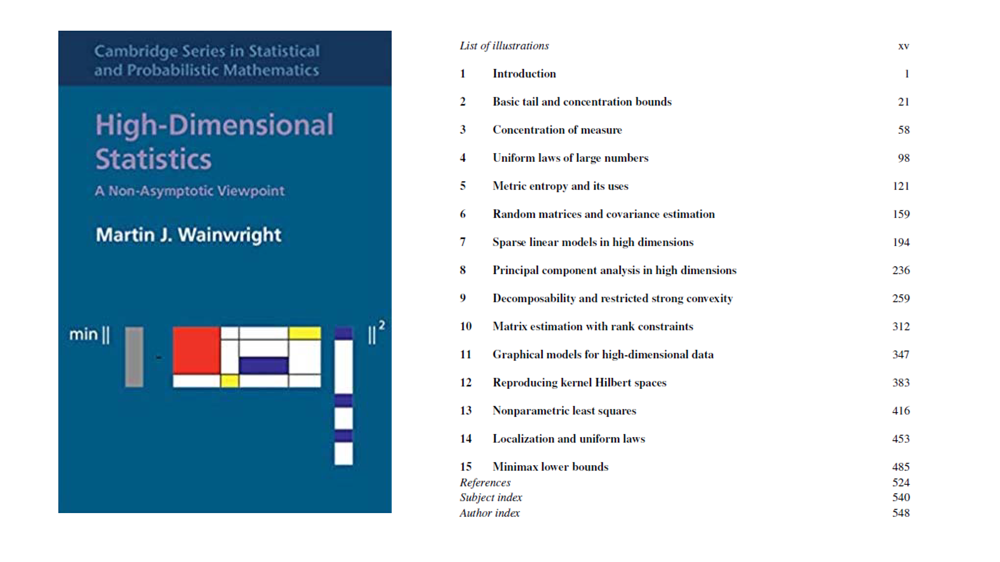</A>(53)</LI>
<LI><center><A HREF="card-54.html" target="_blank">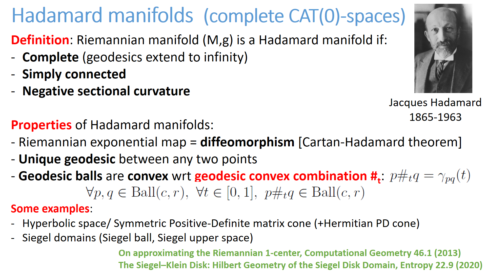</A>(54)</LI>
<LI><center><A HREF="card-55.html" target="_blank">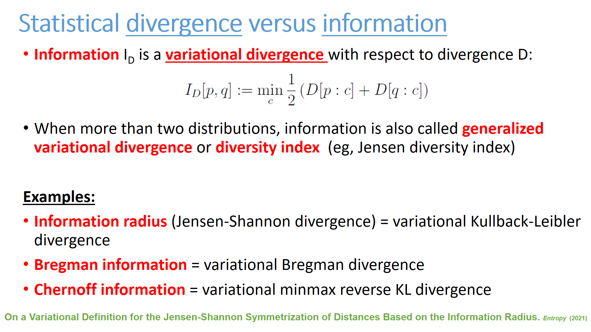</A>(55)</LI>
<LI><center><A HREF="card-56.html" target="_blank"></A>(56)</LI>
<LI><center><A HREF="card-57.html" target="_blank">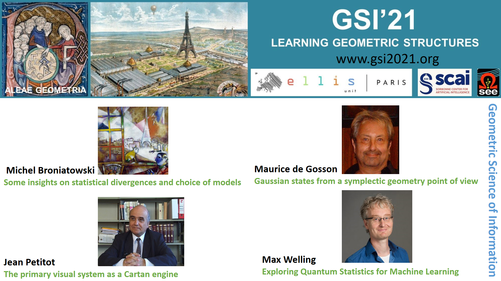</A>(57)</LI>
<LI><center><A HREF="card-58.html" target="_blank"></A>(58)</LI>
<LI><center><A HREF="card-59.html" target="_blank">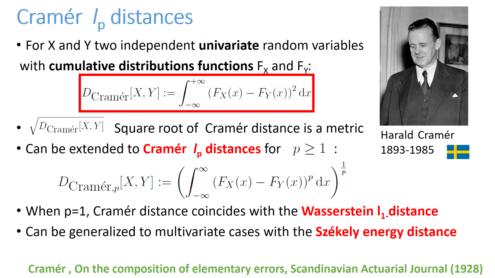</A>(59)</LI>
<LI><center><A HREF="card-60.html" target="_blank">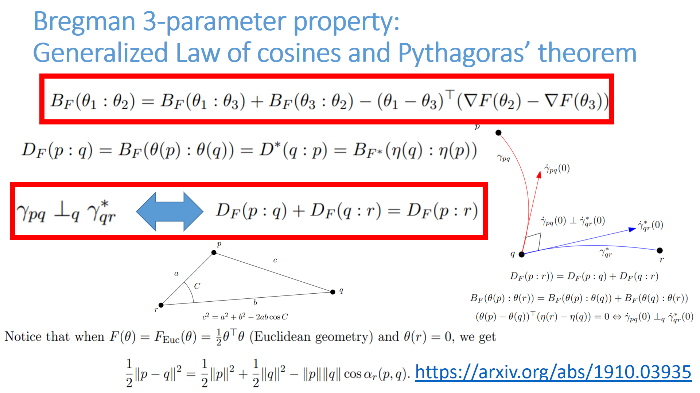</A>(60)</LI>
<LI><center><A HREF="card-61.html" target="_blank">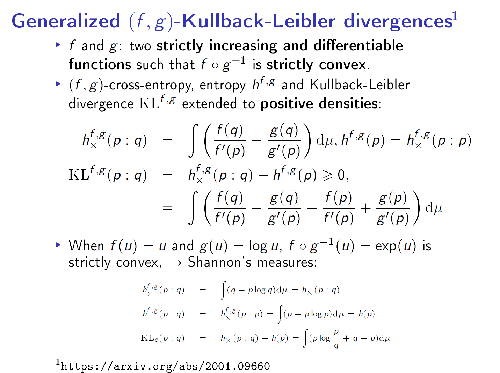</A>(61)</LI>
<LI><center><A HREF="card-62.html" target="_blank"></A>(62)</LI>
<LI><center><A HREF="card-63.html" target="_blank"></A>(63)</LI>
<LI><center><A HREF="card-64.html" target="_blank">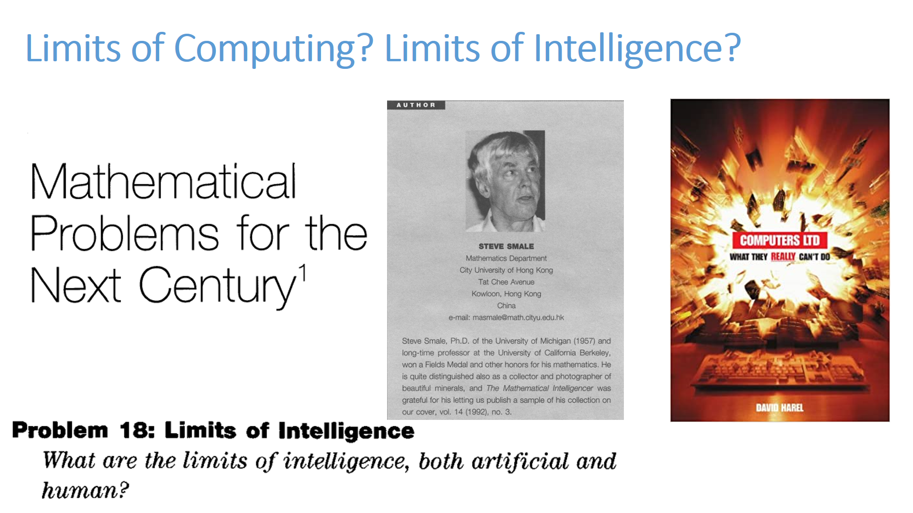</A>(64)</LI>
<LI><center><A HREF="card-65.html" target="_blank"></A>(65)</LI>
<LI><center><A HREF="card-66.html" target="_blank"></A>(66)</LI>
<LI><center><A HREF="card-67.html" target="_blank">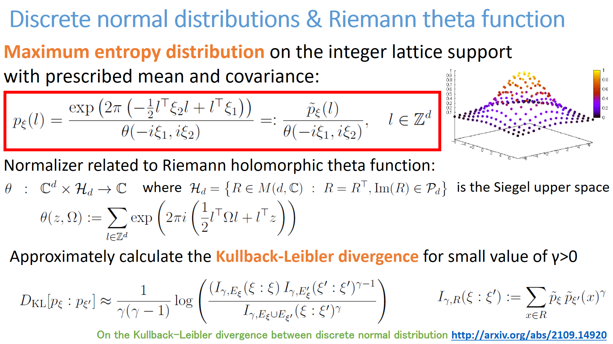</A>(67)</LI>
<LI><center><A HREF="card-68.html" target="_blank">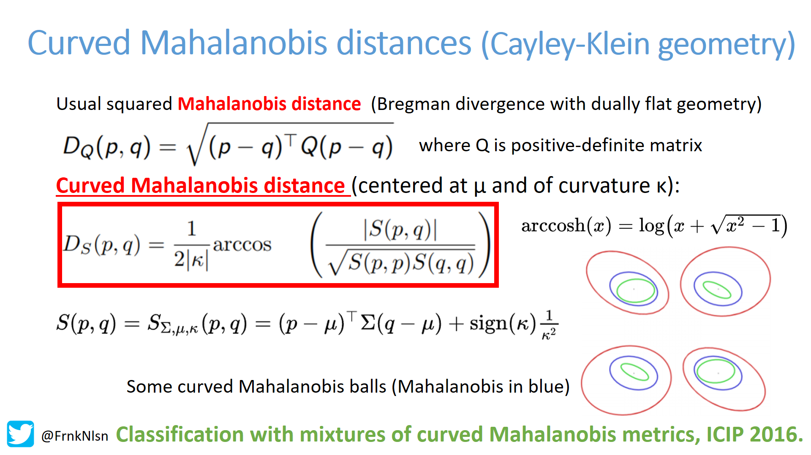</A>(68)</LI>
<LI><center><A HREF="card-69.html" target="_blank"></A>(69)</LI>
<LI><center><A HREF="card-70.html" target="_blank">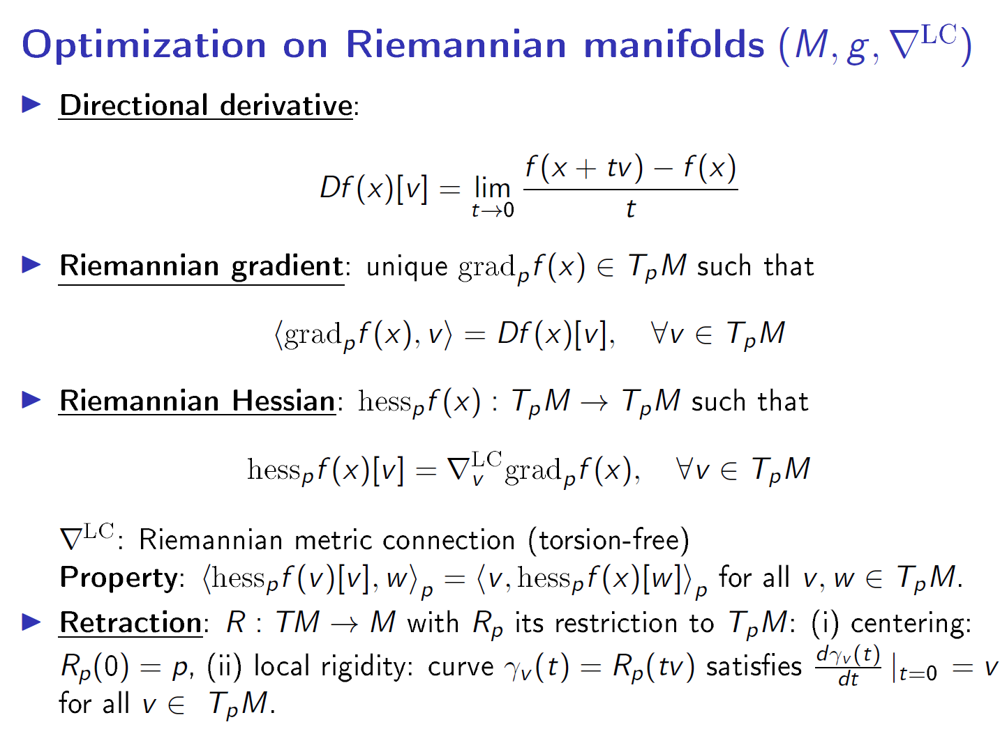</A>(70)</LI>
<LI><center><A HREF="card-71.html" target="_blank"></A>(71)</LI>
<LI><center><A HREF="card-72.html" target="_blank">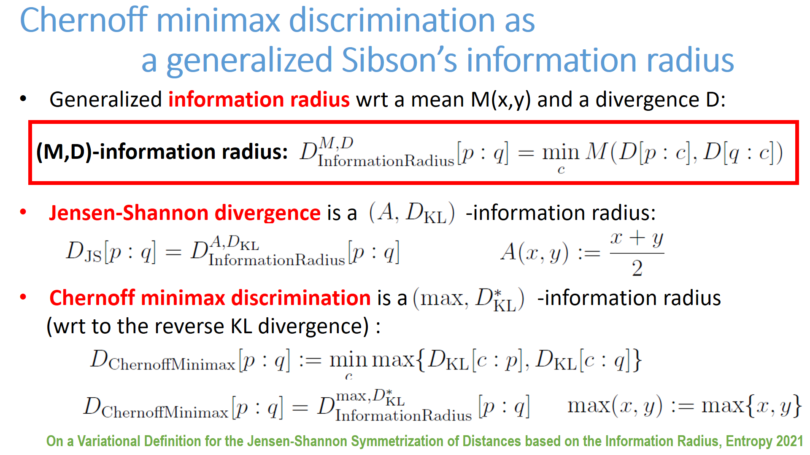</A>(72)</LI>
<LI><center><A HREF="card-73.html" target="_blank"></A>(73)</LI>
<LI><center><A HREF="card-74.html" target="_blank">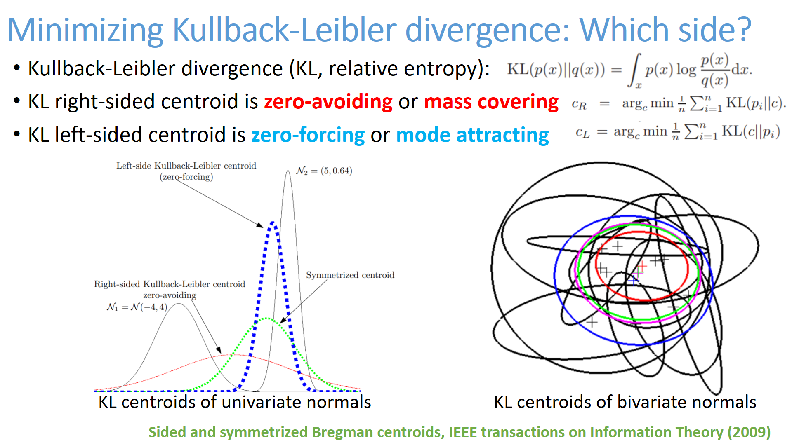</A>(74)</LI>
</ul><BR> <A HREF="index1.html">Previous card page</A>&nbsp;&nbsp;&nbsp; <A HREF="index3.html">Next card page</A>
